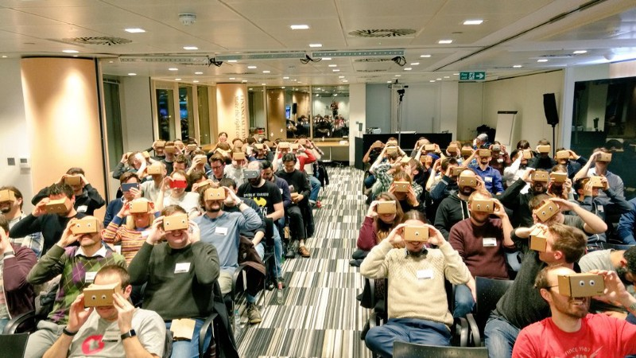

in the spotlight
Toolbars, keyboards, and the viewports
medium.com Latest Blog Posts
Latest Blog Posts

4 ways Virtual Reality can now step up and help the world
For many, it feels as though we are increasingly living in an age of political anger and polarisation. Admittedly, technology has had its…

Prototyping a VR web app with the world’s leading tourism company
For a while now, my colleagues and I have been talking about WebVR — combining the power of virtual reality with the distribution and accessibility of the web.
 Events
Events

Mobile World Progress
For many, it feels as though we are increasingly living in an age of political anger and polarisation. Admittedly, technology has had its…
 Useful Links
Useful Links
4 ways Virtual Reality can now step up and help the world
For many, it feels as though we are increasingly living in an age of political anger and polarisation. Admittedly, technology has had its…